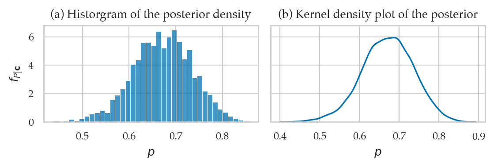
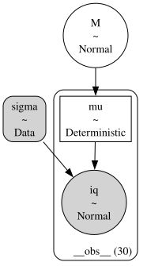
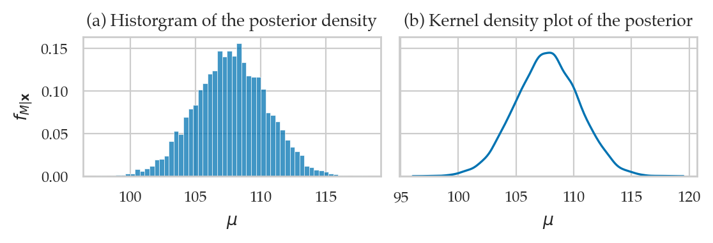
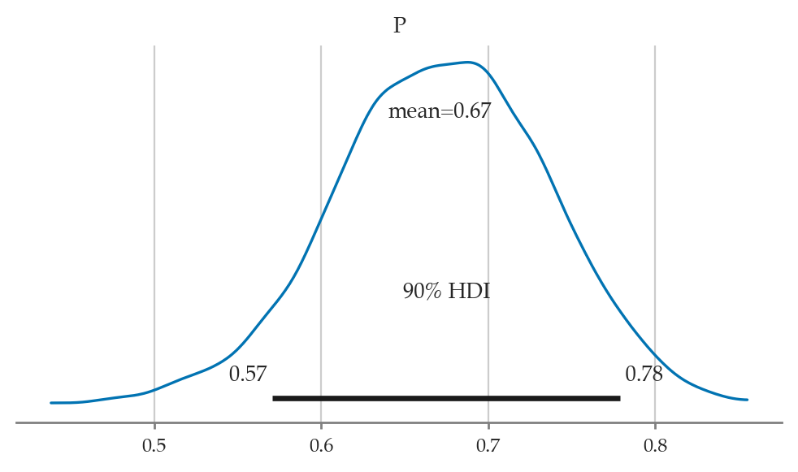
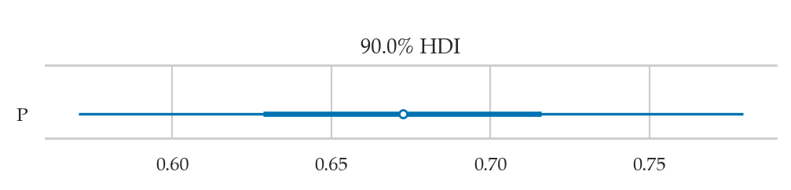
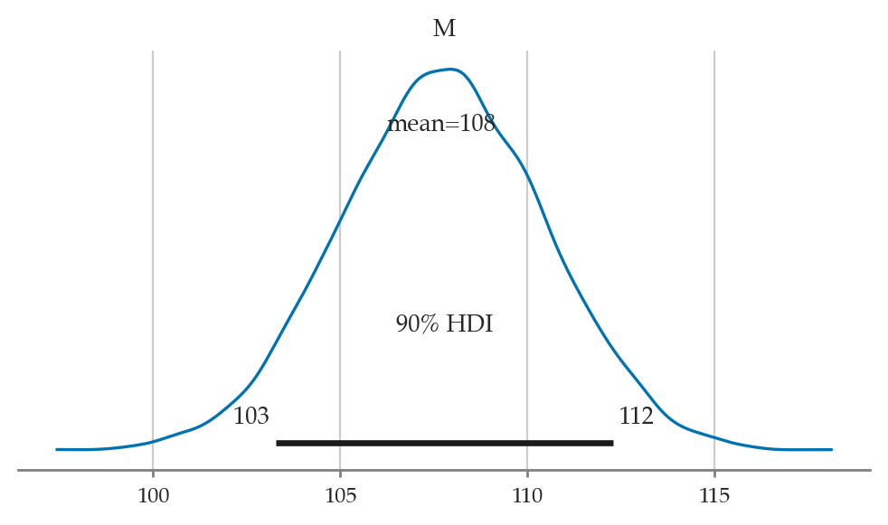
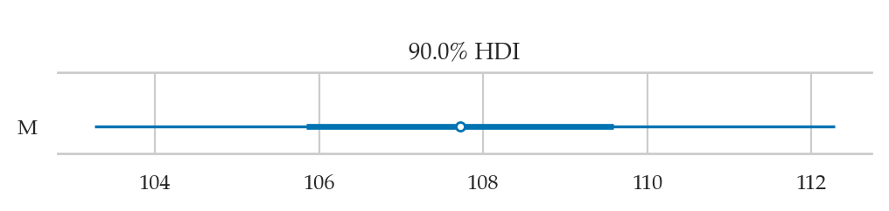
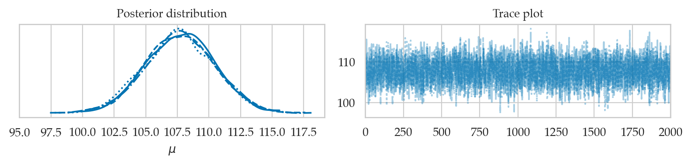
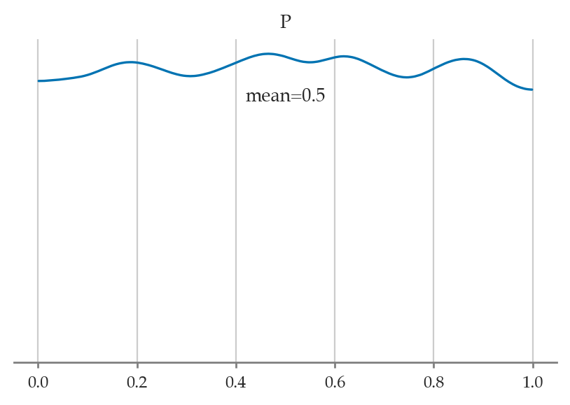
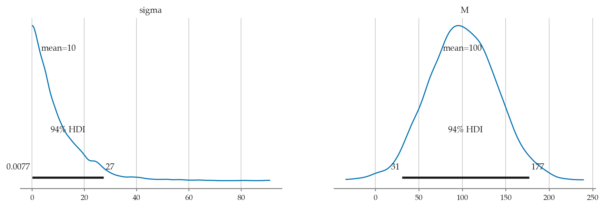

Section 5.2 — Bayesian inference computations#
This notebook contains the code examples from Section 5.2 Bayesian inference computations from the No Bullshit Guide to Statistics.
See also:
Notebook setup#
# load Python modules
import os
import numpy as np
import pandas as pd
import seaborn as sns
import matplotlib.pyplot as plt
# Figures setup
plt.clf() # needed otherwise `sns.set_theme` doesn"t work
from plot_helpers import RCPARAMS
RCPARAMS.update({"figure.figsize": (5, 3)}) # good for screen
# RCPARAMS.update({"figure.figsize": (5, 2)}) # good for print
sns.set_theme(
context="paper",
style="whitegrid",
palette="colorblind",
rc=RCPARAMS,
)
# High-resolution please
%config InlineBackend.figure_format = "retina"
# Where to store figures
from ministats.utils import savefigure
DESTDIR = "figures/bayes/computations"
<Figure size 640x480 with 0 Axes>
Definitions#
TODO
Posterior inference using MCMC estimation#
TODO: point-form definitions
Bayesian inference using Bambi#
TODO: mention Bambi classes
import bambi as bmb
WARNING (pytensor.tensor.blas): Using NumPy C-API based implementation for BLAS functions.
print(bmb.Prior.__doc__)
Abstract specification of a term prior.
Parameters
----------
name : str
Name of prior distribution. Must be the name of a PyMC distribution
(e.g., ``"Normal"``, ``"Bernoulli"``, etc.)
auto_scale: bool
Whether to adjust the parameters of the prior or use them as passed. Default to ``True``.
kwargs : dict
Optional keywords specifying the parameters of the named distribution.
dist : pymc.distributions.distribution.DistributionMeta or callable
A callable that returns a valid PyMC distribution. The signature must contain ``name``,
``dims``, and ``shape``, as well as its own keyworded arguments.
print("\n".join(bmb.Model.__doc__.splitlines()[0:27]))
Specification of model class.
Parameters
----------
formula : str or bambi.formula.Formula
A model description written using the formula syntax from the ``formulae`` library.
data : pandas.DataFrame
A pandas dataframe containing the data on which the model will be fit, with column
names matching variables defined in the formula.
family : str or bambi.families.Family
A specification of the model family (analogous to the family object in R). Either
a string, or an instance of class ``bambi.families.Family``. If a string is passed, a
family with the corresponding name must be defined in the defaults loaded at ``Model``
initialization. Valid pre-defined families are ``"bernoulli"``, ``"beta"``,
``"binomial"``, ``"categorical"``, ``"gamma"``, ``"gaussian"``, ``"negativebinomial"``,
``"poisson"``, ``"t"``, and ``"wald"``. Defaults to ``"gaussian"``.
priors : dict
Optional specification of priors for one or more terms. A dictionary where the keys are
the names of terms in the model, "common," or "group_specific" and the values are
instances of class ``Prior``. If priors are unset, uses automatic priors inspired by
the R rstanarm library.
link : str or Dict[str, str]
The name of the link function to use. Valid names are ``"cloglog"``, ``"identity"``,
``"inverse_squared"``, ``"inverse"``, ``"log"``, ``"logit"``, ``"probit"``, and
``"softmax"``. Not all the link functions can be used with all the families.
If a dictionary, keys are the names of the target parameters and the values are the names
of the link functions.
Example 1: estimating the probability of a bias of a coin#
Let’s revisit the biased coin example from Section 5.1, where we want to estimate the probability the coin turns up heads.
Data#
We have a sample that contains \(n=50\) observations (coin tosses) from the coin.
The outcome 1 corresponds to heads,
while the outcome 0 corresponds to tails.
We package the data as the ctoss column of a new data frame ctosses.
ctosses = [1,1,0,0,1,0,1,1,1,1,1,0,1,1,0,0,0,1,1,1,
1,1,1,1,1,1,1,0,1,1,1,1,1,1,1,1,0,0,1,0,
0,1,0,1,0,1,0,1,1,0]
ctosses = pd.DataFrame({"ctoss":ctosses})
ctosses.head(3)
| ctoss | |
|---|---|
| 0 | 1 |
| 1 | 1 |
| 2 | 0 |
The proportion of heads outcomes is:
ctosses["ctoss"].mean()
0.68
Model#
The model is
import bambi as bmb
bmb.Prior("Uniform", lower=0, upper=1)
Uniform(lower: 0.0, upper: 1.0)
priors1 = {
"Intercept": bmb.Prior("Uniform", lower=0, upper=1)
# "Intercept": bmb.Prior("Beta", alpha=1, beta=1),
}
mod1 = bmb.Model(formula="ctoss ~ 1",
family="bernoulli",
link="identity",
priors=priors1,
data=ctosses)
mod1.set_alias({"Intercept": "P"})
mod1
Formula: ctoss ~ 1
Family: bernoulli
Link: p = identity
Observations: 50
Priors:
target = p
Common-level effects
Intercept ~ Uniform(lower: 0.0, upper: 1.0)
mod1.build()
mod1.graph()
# # FIGURES ONLY
# filename = os.path.join(DESTDIR, "example1_mod1_graph")
# mod1.graph(name=filename, fmt="png", dpi=300)
---------------------------------------------------------------------------
FileNotFoundError Traceback (most recent call last)
File /opt/hostedtoolcache/Python/3.9.20/x64/lib/python3.9/site-packages/graphviz/backend/execute.py:76, in run_check(cmd, input_lines, encoding, quiet, **kwargs)
75 kwargs['stdout'] = kwargs['stderr'] = subprocess.PIPE
---> 76 proc = _run_input_lines(cmd, input_lines, kwargs=kwargs)
77 else:
File /opt/hostedtoolcache/Python/3.9.20/x64/lib/python3.9/site-packages/graphviz/backend/execute.py:96, in _run_input_lines(cmd, input_lines, kwargs)
95 def _run_input_lines(cmd, input_lines, *, kwargs):
---> 96 popen = subprocess.Popen(cmd, stdin=subprocess.PIPE, **kwargs)
98 stdin_write = popen.stdin.write
File /opt/hostedtoolcache/Python/3.9.20/x64/lib/python3.9/subprocess.py:951, in Popen.__init__(self, args, bufsize, executable, stdin, stdout, stderr, preexec_fn, close_fds, shell, cwd, env, universal_newlines, startupinfo, creationflags, restore_signals, start_new_session, pass_fds, user, group, extra_groups, encoding, errors, text, umask)
948 self.stderr = io.TextIOWrapper(self.stderr,
949 encoding=encoding, errors=errors)
--> 951 self._execute_child(args, executable, preexec_fn, close_fds,
952 pass_fds, cwd, env,
953 startupinfo, creationflags, shell,
954 p2cread, p2cwrite,
955 c2pread, c2pwrite,
956 errread, errwrite,
957 restore_signals,
958 gid, gids, uid, umask,
959 start_new_session)
960 except:
961 # Cleanup if the child failed starting.
File /opt/hostedtoolcache/Python/3.9.20/x64/lib/python3.9/subprocess.py:1837, in Popen._execute_child(self, args, executable, preexec_fn, close_fds, pass_fds, cwd, env, startupinfo, creationflags, shell, p2cread, p2cwrite, c2pread, c2pwrite, errread, errwrite, restore_signals, gid, gids, uid, umask, start_new_session)
1836 err_msg = os.strerror(errno_num)
-> 1837 raise child_exception_type(errno_num, err_msg, err_filename)
1838 raise child_exception_type(err_msg)
FileNotFoundError: [Errno 2] No such file or directory: PosixPath('dot')
The above exception was the direct cause of the following exception:
ExecutableNotFound Traceback (most recent call last)
File /opt/hostedtoolcache/Python/3.9.20/x64/lib/python3.9/site-packages/IPython/core/formatters.py:974, in MimeBundleFormatter.__call__(self, obj, include, exclude)
971 method = get_real_method(obj, self.print_method)
973 if method is not None:
--> 974 return method(include=include, exclude=exclude)
975 return None
976 else:
File /opt/hostedtoolcache/Python/3.9.20/x64/lib/python3.9/site-packages/graphviz/jupyter_integration.py:98, in JupyterIntegration._repr_mimebundle_(self, include, exclude, **_)
96 include = set(include) if include is not None else {self._jupyter_mimetype}
97 include -= set(exclude or [])
---> 98 return {mimetype: getattr(self, method_name)()
99 for mimetype, method_name in MIME_TYPES.items()
100 if mimetype in include}
File /opt/hostedtoolcache/Python/3.9.20/x64/lib/python3.9/site-packages/graphviz/jupyter_integration.py:98, in <dictcomp>(.0)
96 include = set(include) if include is not None else {self._jupyter_mimetype}
97 include -= set(exclude or [])
---> 98 return {mimetype: getattr(self, method_name)()
99 for mimetype, method_name in MIME_TYPES.items()
100 if mimetype in include}
File /opt/hostedtoolcache/Python/3.9.20/x64/lib/python3.9/site-packages/graphviz/jupyter_integration.py:112, in JupyterIntegration._repr_image_svg_xml(self)
110 def _repr_image_svg_xml(self) -> str:
111 """Return the rendered graph as SVG string."""
--> 112 return self.pipe(format='svg', encoding=SVG_ENCODING)
File /opt/hostedtoolcache/Python/3.9.20/x64/lib/python3.9/site-packages/graphviz/piping.py:104, in Pipe.pipe(self, format, renderer, formatter, neato_no_op, quiet, engine, encoding)
55 def pipe(self,
56 format: typing.Optional[str] = None,
57 renderer: typing.Optional[str] = None,
(...)
61 engine: typing.Optional[str] = None,
62 encoding: typing.Optional[str] = None) -> typing.Union[bytes, str]:
63 """Return the source piped through the Graphviz layout command.
64
65 Args:
(...)
102 '<?xml version='
103 """
--> 104 return self._pipe_legacy(format,
105 renderer=renderer,
106 formatter=formatter,
107 neato_no_op=neato_no_op,
108 quiet=quiet,
109 engine=engine,
110 encoding=encoding)
File /opt/hostedtoolcache/Python/3.9.20/x64/lib/python3.9/site-packages/graphviz/_tools.py:171, in deprecate_positional_args.<locals>.decorator.<locals>.wrapper(*args, **kwargs)
162 wanted = ', '.join(f'{name}={value!r}'
163 for name, value in deprecated.items())
164 warnings.warn(f'The signature of {func.__name__} will be reduced'
165 f' to {supported_number} positional args'
166 f' {list(supported)}: pass {wanted}'
167 ' as keyword arg(s)',
168 stacklevel=stacklevel,
169 category=category)
--> 171 return func(*args, **kwargs)
File /opt/hostedtoolcache/Python/3.9.20/x64/lib/python3.9/site-packages/graphviz/piping.py:121, in Pipe._pipe_legacy(self, format, renderer, formatter, neato_no_op, quiet, engine, encoding)
112 @_tools.deprecate_positional_args(supported_number=2)
113 def _pipe_legacy(self,
114 format: typing.Optional[str] = None,
(...)
119 engine: typing.Optional[str] = None,
120 encoding: typing.Optional[str] = None) -> typing.Union[bytes, str]:
--> 121 return self._pipe_future(format,
122 renderer=renderer,
123 formatter=formatter,
124 neato_no_op=neato_no_op,
125 quiet=quiet,
126 engine=engine,
127 encoding=encoding)
File /opt/hostedtoolcache/Python/3.9.20/x64/lib/python3.9/site-packages/graphviz/piping.py:149, in Pipe._pipe_future(self, format, renderer, formatter, neato_no_op, quiet, engine, encoding)
146 if encoding is not None:
147 if codecs.lookup(encoding) is codecs.lookup(self.encoding):
148 # common case: both stdin and stdout need the same encoding
--> 149 return self._pipe_lines_string(*args, encoding=encoding, **kwargs)
150 try:
151 raw = self._pipe_lines(*args, input_encoding=self.encoding, **kwargs)
File /opt/hostedtoolcache/Python/3.9.20/x64/lib/python3.9/site-packages/graphviz/backend/piping.py:212, in pipe_lines_string(engine, format, input_lines, encoding, renderer, formatter, neato_no_op, quiet)
206 cmd = dot_command.command(engine, format,
207 renderer=renderer,
208 formatter=formatter,
209 neato_no_op=neato_no_op)
210 kwargs = {'input_lines': input_lines, 'encoding': encoding}
--> 212 proc = execute.run_check(cmd, capture_output=True, quiet=quiet, **kwargs)
213 return proc.stdout
File /opt/hostedtoolcache/Python/3.9.20/x64/lib/python3.9/site-packages/graphviz/backend/execute.py:81, in run_check(cmd, input_lines, encoding, quiet, **kwargs)
79 except OSError as e:
80 if e.errno == errno.ENOENT:
---> 81 raise ExecutableNotFound(cmd) from e
82 raise
84 if not quiet and proc.stderr:
ExecutableNotFound: failed to execute PosixPath('dot'), make sure the Graphviz executables are on your systems' PATH
<graphviz.graphs.Digraph at 0x7f34086a66d0>
Fitting the model#
idata1 = mod1.fit(random_seed=[42,42,44,45])
Modeling the probability that ctoss==1
---------------------------------------------------------------------------
ValueError Traceback (most recent call last)
Cell In[11], line 1
----> 1 idata1 = mod1.fit(random_seed=[42,42,44,45])
File /opt/hostedtoolcache/Python/3.9.20/x64/lib/python3.9/site-packages/bambi/models.py:333, in Model.fit(self, draws, tune, discard_tuned_samples, omit_offsets, include_mean, inference_method, init, n_init, chains, cores, random_seed, **kwargs)
326 response = self.components[self.response_name]
327 _log.info(
328 "Modeling the probability that %s==%s",
329 response.response_term.name,
330 str(response.response_term.success),
331 )
--> 333 return self.backend.run(
334 draws=draws,
335 tune=tune,
336 discard_tuned_samples=discard_tuned_samples,
337 omit_offsets=omit_offsets,
338 include_mean=include_mean,
339 inference_method=inference_method,
340 init=init,
341 n_init=n_init,
342 chains=chains,
343 cores=cores,
344 random_seed=random_seed,
345 **kwargs,
346 )
File /opt/hostedtoolcache/Python/3.9.20/x64/lib/python3.9/site-packages/bambi/backend/pymc.py:96, in PyMCModel.run(self, draws, tune, discard_tuned_samples, omit_offsets, include_mean, inference_method, init, n_init, chains, cores, random_seed, **kwargs)
94 # NOTE: Methods return different types of objects (idata, approximation, and dictionary)
95 if inference_method in ["mcmc", "nuts_numpyro", "nuts_blackjax"]:
---> 96 result = self._run_mcmc(
97 draws,
98 tune,
99 discard_tuned_samples,
100 omit_offsets,
101 include_mean,
102 init,
103 n_init,
104 chains,
105 cores,
106 random_seed,
107 inference_method,
108 **kwargs,
109 )
110 elif inference_method == "vi":
111 result = self._run_vi(**kwargs)
File /opt/hostedtoolcache/Python/3.9.20/x64/lib/python3.9/site-packages/bambi/backend/pymc.py:172, in PyMCModel._run_mcmc(self, draws, tune, discard_tuned_samples, omit_offsets, include_mean, init, n_init, chains, cores, random_seed, sampler_backend, **kwargs)
170 if sampler_backend == "mcmc":
171 try:
--> 172 idata = pm.sample(
173 draws=draws,
174 tune=tune,
175 discard_tuned_samples=discard_tuned_samples,
176 init=init,
177 n_init=n_init,
178 chains=chains,
179 cores=cores,
180 random_seed=random_seed,
181 **kwargs,
182 )
183 except (RuntimeError, ValueError):
184 if (
185 "ValueError: Mass matrix contains" in traceback.format_exc()
186 and init == "auto"
187 ):
File /opt/hostedtoolcache/Python/3.9.20/x64/lib/python3.9/site-packages/pymc/sampling/mcmc.py:647, in sample(draws, tune, chains, cores, random_seed, progressbar, step, var_names, nuts_sampler, initvals, init, jitter_max_retries, n_init, trace, discard_tuned_samples, compute_convergence_checks, keep_warning_stat, return_inferencedata, idata_kwargs, nuts_sampler_kwargs, callback, mp_ctx, model, **kwargs)
645 if random_seed == -1:
646 random_seed = None
--> 647 random_seed_list = _get_seeds_per_chain(random_seed, chains)
649 if not discard_tuned_samples and not return_inferencedata:
650 warnings.warn(
651 "Tuning samples will be included in the returned `MultiTrace` object, which can lead to"
652 " complications in your downstream analysis. Please consider to switch to `InferenceData`:\n"
(...)
655 stacklevel=2,
656 )
File /opt/hostedtoolcache/Python/3.9.20/x64/lib/python3.9/site-packages/pymc/util.py:447, in _get_seeds_per_chain(random_state, chains)
444 raise ValueError(f"The `seeds` must be array-like. Got {type(random_state)} instead.")
446 if len(random_state) != chains:
--> 447 raise ValueError(
448 f"Number of seeds ({len(random_state)}) does not match the number of chains ({chains})."
449 )
451 return random_state
ValueError: Number of seeds (4) does not match the number of chains (2).
Exploring InferenceData objects#
idata1
-
<xarray.Dataset> Size: 40kB Dimensions: (chain: 4, draw: 1000) Coordinates: * chain (chain) int64 32B 0 1 2 3 * draw (draw) int64 8kB 0 1 2 3 4 5 6 7 ... 993 994 995 996 997 998 999 Data variables: P (chain, draw) float64 32kB 0.7634 0.7506 0.7648 ... 0.6293 0.6703 Attributes: created_at: 2024-11-13T00:46:45.716187+00:00 arviz_version: 0.19.0 inference_library: pymc inference_library_version: 5.18.0 sampling_time: 0.8677458763122559 tuning_steps: 1000 modeling_interface: bambi modeling_interface_version: 0.14.0 -
<xarray.Dataset> Size: 496kB Dimensions: (chain: 4, draw: 1000) Coordinates: * chain (chain) int64 32B 0 1 2 3 * draw (draw) int64 8kB 0 1 2 3 4 5 ... 995 996 997 998 999 Data variables: (12/17) acceptance_rate (chain, draw) float64 32kB 1.0 1.0 ... 0.8587 1.0 diverging (chain, draw) bool 4kB False False ... False False energy (chain, draw) float64 32kB 34.67 34.1 ... 33.7 32.99 energy_error (chain, draw) float64 32kB -0.1996 ... -0.09346 index_in_trajectory (chain, draw) int64 32kB 1 -1 -1 -3 -3 ... 3 1 3 -1 largest_eigval (chain, draw) float64 32kB nan nan nan ... nan nan ... ... process_time_diff (chain, draw) float64 32kB 6.1e-05 ... 0.000103 reached_max_treedepth (chain, draw) bool 4kB False False ... False False smallest_eigval (chain, draw) float64 32kB nan nan nan ... nan nan step_size (chain, draw) float64 32kB 1.183 1.183 ... 0.9895 step_size_bar (chain, draw) float64 32kB 1.292 1.292 ... 1.511 tree_depth (chain, draw) int64 32kB 1 1 1 2 2 1 ... 2 2 2 1 2 2 Attributes: created_at: 2024-11-13T00:46:45.721960+00:00 arviz_version: 0.19.0 inference_library: pymc inference_library_version: 5.18.0 sampling_time: 0.8677458763122559 tuning_steps: 1000 modeling_interface: bambi modeling_interface_version: 0.14.0 -
<xarray.Dataset> Size: 800B Dimensions: (__obs__: 50) Coordinates: * __obs__ (__obs__) int64 400B 0 1 2 3 4 5 6 7 8 ... 42 43 44 45 46 47 48 49 Data variables: ctoss (__obs__) int64 400B 1 1 0 0 1 0 1 1 1 1 1 ... 0 1 0 1 0 1 0 1 1 0 Attributes: created_at: 2024-11-13T00:46:45.723618+00:00 arviz_version: 0.19.0 inference_library: pymc inference_library_version: 5.18.0 modeling_interface: bambi modeling_interface_version: 0.14.0
type(idata1)
arviz.data.inference_data.InferenceData
idata1.groups()
['posterior', 'sample_stats', 'observed_data']
type(idata1["posterior"])
xarray.core.dataset.Dataset
list(idata1["posterior"].variables)
['chain', 'draw', 'P']
type(idata1["posterior"]["P"])
xarray.core.dataarray.DataArray
idata1["posterior"]["P"].values.round(3)
array([[0.763, 0.751, 0.765, ..., 0.634, 0.619, 0.626],
[0.683, 0.734, 0.743, ..., 0.63 , 0.658, 0.641],
[0.561, 0.772, 0.725, ..., 0.615, 0.644, 0.697],
[0.627, 0.691, 0.637, ..., 0.618, 0.629, 0.67 ]])
idata1["posterior"]["P"].values.shape
(4, 1000)
idata1.to_dataframe(groups=["posterior"]).head(3)
| chain | draw | P | |
|---|---|---|---|
| 0 | 0 | 0 | 0.763386 |
| 1 | 0 | 1 | 0.750632 |
| 2 | 0 | 2 | 0.764847 |
Extracting the samples from the posterior#
postP = idata1["posterior"]["P"].values.flatten()
postP
array([0.7633857 , 0.75063231, 0.76484667, ..., 0.61816546, 0.62925079,
0.67031565])
Visualize the posterior#
Histogram#
ax = sns.histplot(x=postP, stat="density")
ax.set_xlabel("$p$")
ax.set_ylabel("$f_{P|\\mathbf{c}}$");
{kind=link}
Kernel density plot#
ax = sns.kdeplot(x=postP)
ax.set_xlabel("$p$")
ax.set_ylabel("$f_{P|\\mathbf{c}}$");
{kind=link}
# FIGURES ONLY
with plt.rc_context({"figure.figsize":(5.7,2)}):
fig, axs = plt.subplots(1, 2, sharey=True)
sns.histplot(x=postP, stat="density", ax=axs[0])
axs[0].set_xlabel("$p$")
axs[0].set_ylabel("$f_{P|\\mathbf{c}}$");
axs[0].set_title("(a) Historgram of the posterior density")
sns.kdeplot(x=postP, ax=axs[1])
axs[1].set_xlabel("$p$")
axs[1].set_title("(b) Kernel density plot of the posterior")
filename = os.path.join(DESTDIR, "example1_histplot_and_kdeplot_postP.pdf")
savefigure(plt.gcf(), filename)
Saved figure to figures/bayes/computations/example1_histplot_and_kdeplot_postP.pdf
Saved figure to figures/bayes/computations/example1_histplot_and_kdeplot_postP.png
{kind=link}

Summarize the posterior#
len(postP)
4000
Posterior mean#
np.mean(postP)
0.6711720441074204
Posterior standard deviation#
np.std(postP)
0.06381346718829903
Posterior median#
np.median(postP)
0.6725321643738474
Posterior quartiles#
np.quantile(postP, [0.25, 0.5, 0.75])
array([0.62863239, 0.67253216, 0.71606159])
Posterior percentiles#
np.percentile(postP, [3, 97])
array([0.54596545, 0.78705472])
Posterior mode#
# 1. Fit a Gaussian KDE curve approx. to the posterior samples `postP`
from scipy.stats import gaussian_kde
postP_kde = gaussian_kde(postP)
# 2. Find the max of the KDE curve
ps = np.linspace(0, 1, 10001)
densityP = postP_kde(ps)
ps[np.argmax(densityP)]
0.6867000000000001
Credible interval#
from ministats.hpdi import hpdi_from_samples
hpdi_from_samples(postP, hdi_prob=0.9)
[0.5706123254669888, 0.7792698739095439]
Example 2: estimating the IQ score#
Let’s return to the investigation of the smart drug effects on IQ scores.
Data#
We have collected data from \(30\) individuals who took the smart drug,
which we have packaged into the iq column of the data frame iqs.
iqs = [ 82.6, 105.5, 96.7, 84.0, 127.2, 98.8, 94.3,
122.1, 86.8, 86.1, 107.9, 118.9, 116.5, 101.0,
91.0, 130.0, 155.7, 120.8, 107.9, 117.1, 100.1,
108.2, 99.8, 103.6, 108.1, 110.3, 101.8, 131.7,
103.8, 116.4]
iqs = pd.DataFrame({"iq":iqs})
iqs["iq"].mean()
107.82333333333334
Model#
We will use the following Bayesian model:
We place a broad prior on the mean parameter \(M\), by choosing a large value for the standard deviation \(\sigma_M\). We assume the IQ scores come from a population with standard deviation \(\sigma = 15\).
import bambi as bmb
priors2 = {
"Intercept": bmb.Prior("Normal", mu=100, sigma=40),
"sigma": bmb.Prior("Data", value=15),
# "sigma": 15, # CHANGE WHEN https://github.com/bambinos/bambi/pull/851/files LANDS
}
mod2 = bmb.Model(formula="iq ~ 1",
family="gaussian",
link="identity",
priors=priors2,
data=iqs)
mod2.set_alias({"Intercept": "M"})
mod2
Formula: iq ~ 1
Family: gaussian
Link: mu = identity
Observations: 30
Priors:
target = mu
Common-level effects
Intercept ~ Normal(mu: 100.0, sigma: 40.0)
Auxiliary parameters
sigma ~ Data(value: 15.0)
mod2.build()
mod2.graph()
# # FIGURES ONLY
# filename = os.path.join(DESTDIR, "example2_mod2_graph")
# mod2.graph(name=filename, fmt="png", dpi=300)

This time we’ll generate \(N=2000\) samples from each chain.
idata2 = mod2.fit(draws=2000, random_seed=[42,43,44,45])
Auto-assigning NUTS sampler...
Initializing NUTS using jitter+adapt_diag...
Multiprocess sampling (4 chains in 4 jobs)
NUTS: [M]
Sampling 4 chains for 1_000 tune and 2_000 draw iterations (4_000 + 8_000 draws total) took 1 seconds.
Extract the samples from the posterior#
postM = idata2["posterior"]["M"].values.flatten()
len(postM)
8000
postM
array([109.72320604, 108.77814301, 108.41518482, ..., 113.22965959,
109.71272604, 102.9694779 ])
Visualize the posterior#
Histogram#
ax = sns.histplot(x=postM, stat="density")
ax.set_xlabel("$\\mu$")
ax.set_ylabel("$f_{M|\\mathbf{x}}$");
{kind=link}
Kernel density plot#
ax = sns.kdeplot(x=postM)
ax.set_xlabel("$\\mu$")
ax.set_ylabel("$f_{M|\\mathbf{x}}$");
{kind=link}
# FIGURES ONLY
with plt.rc_context({"figure.figsize":(5.7,2)}):
fig, axs = plt.subplots(1, 2, sharey=True)
sns.histplot(x=postM, stat="density", ax=axs[0])
axs[0].set_xlabel("$\\mu$")
axs[0].set_ylabel("$f_{M|\\mathbf{x}}$");
axs[0].set_title("(a) Historgram of the posterior density")
sns.kdeplot(x=postM, ax=axs[1])
axs[1].set_xlabel("$\\mu$")
axs[1].set_title("(b) Kernel density plot of the posterior")
filename = os.path.join(DESTDIR, "example2_histplot_and_kdeplot_postM.pdf")
savefigure(plt.gcf(), filename)
Saved figure to figures/bayes/computations/example2_histplot_and_kdeplot_postM.pdf
Saved figure to figures/bayes/computations/example2_histplot_and_kdeplot_postM.png
{kind=link}

Summarize the posterior#
Posterior mean#
np.mean(postM)
107.70792049114165
Posterior standard deviation#
np.std(postM)
2.7477822465272297
Posterior median#
np.median(postM)
107.7189643624964
Posterior quartiles#
np.quantile(postM, [0.25, 0.5, 0.75])
array([105.8404028 , 107.71896436, 109.58680961])
Posterior percentiles#
np.percentile(postM, [3, 97])
array([102.53098902, 112.85640869])
Posterior mode#
# 1. Fit a Gaussian KDE curve approx. to the posterior samples `postM`
from scipy.stats import gaussian_kde
postM_kde = gaussian_kde(postM)
# 2. Find the max of the KDE curve
mus = np.linspace(0, 200, 10001)
densityM = postM_kde(mus)
mus[np.argmax(densityM)]
107.9
Credible interval#
from ministats.hpdi import hpdi_from_samples
hpdi_from_samples(postM, hdi_prob=0.9)
[103.26580730078805, 112.284577803755]
Visualizing and interpreting posteriors#
import arviz as az
Example 1 continued: inferences about the biased coin#
Extracting samples#
For the purpose of our data analysis,
we don’t care about the chain and draw information
and are only interested in in the variable P,
which are the actual samples from the posterior.
The easiest way to extract the samples from the posterior
is to use the ArviZ helper method az.extract shown below.
import arviz as az
postP = az.extract(idata1, var_names="P").values
postP.round(3)
array([0.763, 0.751, 0.765, ..., 0.618, 0.629, 0.67 ])
The call to the function az.extract selected the posterior group,
then selected the variable P within the posterior group.
Summarizing#
az.summary(idata1, kind="stats", hdi_prob=0.9)
| mean | sd | hdi_5% | hdi_95% | |
|---|---|---|---|---|
| P | 0.671 | 0.064 | 0.571 | 0.779 |
# az.summary(idata1, kind="stats", stat_focus="median")
Visualizing#
az.plot_posterior(idata1, hdi_prob=0.9);
# FIGURES ONLY
filename = os.path.join(DESTDIR, "example1_arviz_plot_posterior.pdf")
savefigure(plt.gcf(), filename)
Saved figure to figures/bayes/computations/example1_arviz_plot_posterior.pdf
Saved figure to figures/bayes/computations/example1_arviz_plot_posterior.png
{kind=link}

Options:
If multiple variables, you specify a list to
var_namesto select only certain variables to plotSet the option
point_estimateto"mode"or"median"Add the option
ropeto draw region of practical equivalence, e.g.,rope=[97,103]
az.plot_forest(idata1, combined=True, hdi_prob=0.9, figsize=(6,0.6));
# FIGURES ONLY
filename = os.path.join(DESTDIR, "example1_arviz_plot_forest.pdf")
savefigure(plt.gcf(), filename)
Saved figure to figures/bayes/computations/example1_arviz_plot_forest.pdf
Saved figure to figures/bayes/computations/example1_arviz_plot_forest.png
/Users/ivan/Projects/Minireference/software/ministats/ministats/utils.py:63: UserWarning: Tight layout not applied. The bottom and top margins cannot be made large enough to accommodate all Axes decorations.
fig.tight_layout()
{kind=link}

Example 2 continued: inferences about the population mean#
az.summary(idata2, kind="stats", hdi_prob=0.9)
| mean | sd | hdi_5% | hdi_95% | |
|---|---|---|---|---|
| M | 107.708 | 2.748 | 103.266 | 112.285 |
# az.summary(idata2, kind="stats", stat_focus="median")
az.plot_posterior(idata2, hdi_prob=0.9);
# FIGURES ONLY
filename = os.path.join(DESTDIR, "example2_arviz_plot_posterior.pdf")
savefigure(plt.gcf(), filename)
Saved figure to figures/bayes/computations/example2_arviz_plot_posterior.pdf
Saved figure to figures/bayes/computations/example2_arviz_plot_posterior.png
{kind=link}

az.plot_forest(idata2, combined=True, hdi_prob=0.9, figsize=(6,0.6));
# FIGURES ONLY
filename = os.path.join(DESTDIR, "example2_arviz_plot_forest.pdf")
savefigure(plt.gcf(), filename)
Saved figure to figures/bayes/computations/example2_arviz_plot_forest.pdf
Saved figure to figures/bayes/computations/example2_arviz_plot_forest.png
/Users/ivan/Projects/Minireference/software/ministats/ministats/utils.py:63: UserWarning: Tight layout not applied. The bottom and top margins cannot be made large enough to accommodate all Axes decorations.
fig.tight_layout()
{kind=link}

# TODO: investigate further once predict bug fixed
# az.plot_ppc(idata2_pred)
Explanations#
Choosing priors#
TODO: insert text
informative
weakly informative
noninformative
Bambi default priors#
import bambi as bmb
mod2d = bmb.Model("iq ~ 1", family="gaussian", data=iqs)
mod2d.set_alias({"Intercept":"M"})
mod2d
Formula: iq ~ 1
Family: gaussian
Link: mu = identity
Observations: 30
Priors:
target = mu
Common-level effects
Intercept ~ Normal(mu: 107.8233, sigma: 39.5303)
Auxiliary parameters
sigma ~ HalfStudentT(nu: 4.0, sigma: 15.8121)
iqs["iq"].mean(), iqs["iq"].std(), 2.5*iqs["iq"].std()
(107.82333333333334, 16.082431694100315, 40.20607923525078)
# mod2d.build()
# mod2d.plot_priors();
More info about data inference objects#
type(idata1)
arviz.data.inference_data.InferenceData
idata1.groups()
['posterior', 'sample_stats', 'observed_data']
posterior1 = idata1["posterior"]
type(posterior1)
xarray.core.dataset.Dataset
posterior1.dims
FrozenMappingWarningOnValuesAccess({'chain': 4, 'draw': 1000})
list(posterior1.variables)
['chain', 'draw', 'P']
Ps = posterior1["P"]
type(Ps)
xarray.core.dataarray.DataArray
Ps.dims, Ps.shape
(('chain', 'draw'), (4, 1000))
MCMC diagnostics#
MCMC diagnostic plots#
There are several Arviz plots we can use to check if the Markov Chain Monte Carlo chains were sampling from the posterior as expected, or …
az.plot_trace(idata2);
{kind=link}
# FIGURES ONLY
axs = az.plot_trace(idata2, figsize=(8,2))
ax1, ax2 = axs[0,0], axs[0,1]
#
ax1.set_title("Posterior distribution")
ax1.set_xlabel("$\\mu$")
ax1.set_xticks(np.arange(95,120,2.5))
#
ax2.set_title("Trace plot")
ax2.set_xticks(np.arange(0,2001,250))
#
filename = os.path.join(DESTDIR, "example2_diagnostics_trace.pdf")
savefigure(plt.gcf(), filename)
Saved figure to figures/bayes/computations/example2_diagnostics_trace.pdf
Saved figure to figures/bayes/computations/example2_diagnostics_trace.png
{kind=link}

az.summary(idata2, kind="diagnostics")
| mcse_mean | mcse_sd | ess_bulk | ess_tail | r_hat | |
|---|---|---|---|---|---|
| M | 0.044 | 0.031 | 3854.0 | 5649.0 | 1.0 |
# MAYBE (ask Chelsea)
# az.plot_trace(idata2, kind="rank_bars");
Bayesian workflow#
See also chp_09.ipynb
# BONUS: verify the prior was flat
rng = np.random.default_rng(43)
mod1.plot_priors(random_seed=rng, hdi_prob="hide");
Sampling: [P]
{kind=link}

# mod1.prior_predictive()
Discussion#
Conjugate priors#
Probabilistic programming languages#
Computational cost#
Reporting Bayesian results#
Model predictions (BONUS TOPIC)#
Coin toss predictions#
Let’s generate some observations form the posterior predictive distribution.
idata1_pred = idata1.copy()
# MAYBE: alt notation _rep instead of _pred ?
mod1.predict(idata1_pred, kind="response")
ctosses_pred = az.extract(idata1_pred,
group="posterior_predictive",
var_names="ctoss").values
numheads_pred = ctosses_pred.sum(axis=0)
sns.histplot(x=numheads_pred, bins=range(15,50));
{kind=link}
IQ predictions#
## Can't use Bambi predict because of issue
## https://github.com/bambinos/bambi/issues/850
# idata2_pred = mod2.predict(idata2, kind="response", inplace=False)
# preds2 = az.extract(idata2_pred, group="posterior", var_names="mu").values.flatten()
from scipy.stats import norm
sigma = 15 # known population standard deviation
iq_preds = []
np.random.seed(42)
for i in range(1000):
mu_post = np.random.choice(postM)
iq_pred = norm(loc=mu_post, scale=sigma).rvs(1)[0]
iq_preds.append(iq_pred)
sns.histplot(x=iq_preds);
{kind=link}
Exercises#
TODO: repeat exercises form Sec 5.1 using Bambi and ArviZ
Exercise#
Repeat the analysis in Example 2,
but this time use the exponential prior \(\text{Expon}(\lambda=0.1)\)
on the parameter sigma. Calculate:
a) posterior mean of M
b) posterior mean of sigma
c) posterior median of M and sigma
d) 90% credible interval for M
e) 90% credible interval for sigma
import bambi as bmb
priors2e = {
"Intercept": bmb.Prior("Normal", mu=100, sigma=40),
"sigma": bmb.Prior("Exponential", lam=0.1),
}
mod2e = bmb.Model(formula="iq ~ 1",
family="gaussian",
link="identity",
priors=priors2e,
data=iqs)
mod2e.set_alias({"Intercept": "M"})
mod2e.build()
mod2e.plot_priors();
Sampling: [M, sigma]
{kind=link}

# idata2e = mod2e.fit()
# az.plot_posterior(idata2e)
# JOINT PLOT
# M_samples = idata2e.posterior['M'].values.flatten()
# sigma_samples = idata2e.posterior['sigma'].values.flatten()
# sns.kdeplot(x=M_samples, y=sigma_samples, fill=True)
# plt.xlabel('M')
# plt.ylabel('Sigma')
# plt.title('Density Plot of Mean vs Sigma')
Links#
TODO